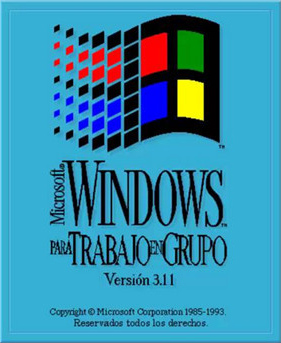

Red de Windows 3.11 en redes modernas
(Protocolo TCP-IP a través de VirtualBox)
Raúl Blanco Rama

Instalación de Windows 3.11
Instalar protocolo TCP/IP
Ping entre máquinas
Demostración de compartición de archivos
Demostración de juego en red